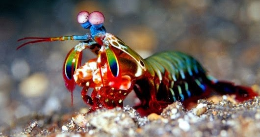
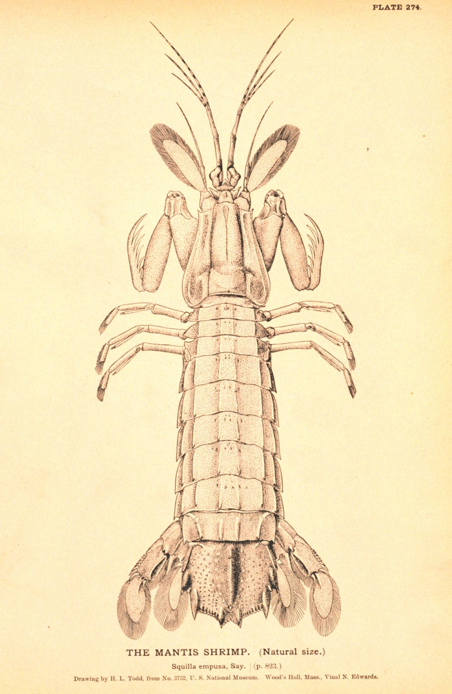

Fatos sobre o Stomatopoda
- Existem mais de 500 espécies de camarões mantis.
- O camarão mantis maduro médio tem cerca de 10 centímetros (3,9 polegadas) de comprimento.
- Estomatopodes têm a visão mais complexa no reino animal.
Sobre o Stomatopoda
Stomatopoda (ou estomatópode), chamados popularmente de tamarutacas ou de lacraias-do-mar no Brasil, é uma ordem de crustáceos marinhos da subclasse Hoplocarida, que agrupa cerca de 400 espécies, caracterizadas principalmente pela morfologia da segunda pata torácica, que é modificada em apêndice subquelado, lembrando uma pata de louva-a-deus.
| Reino | Filo | Subfilo | Classe | Subclasse | Ordem |
|---|---|---|---|---|---|
| Animalia | Arthropoda | Crustacea | Malacostraca | Hoplocarida | Stomatopoda Latreille, 1817 |
Existem mais de 500 espécies de camarões mantis em uma variedade de tamanhos e cores do arco-íris. Como outros crustáceos, o camarão mantis tem uma carapaça ou casca. Suas cores variam de marrom a tons de arco-íris vívidos.
O camarão mantis maduro médio tem cerca de 10 centímetros (3,9 polegadas) de comprimento, mas alguns chegam a 38 centímetros (15 polegadas). Um deles foi documentado até 46 centímetros (18 polegadas).
O camarão mantis tem olhos compostos montados em caules e pode girá-los independentemente um do outro para examinar seus arredores. Enquanto os humanos têm três tipos de fotorreceptores, os olhos de um camarão mantis têm entre 12 e 16 tipos de células fotorreceptoras. Algumas espécies podem até ajustar a sensibilidade de sua visão de cores.